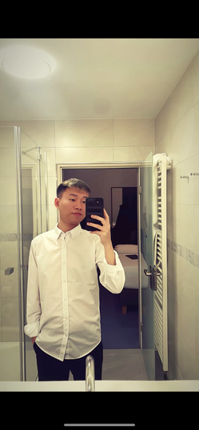

Getränke zubereiten
Ich möchte lernen, Getränke an der Theke zuzubereiten.
Mein Weg in der Gastronomie
Ich lerne Service.
Und arbeite gerne mit Menschen.
Ich bin 21 Jahre alt und mache meine Ausbildung zur Fachkraft in der Gastronomie im Göbel’s Vital Hotel in Bad Sachsa.
Meinen Steckbrief entdecken
01 Über mich
Ich habe diese Ausbildung gewählt, weil ich den klassischen Service lernen und Gäste im Hotel gerne bedienen möchte.
Besonders gefällt mir der Kontakt mit Menschen. Es macht mir Freude, Gäste freundlich zu betreuen und dazu beizutragen, dass sie sich wohlfühlen.
02 Mein Alltag
Diese Aufgaben gehören zu meinem Arbeitsalltag im Restaurantservice.
Ich decke die Tische ein und poliere Gläser und Besteck.
Ich bringe Getränke und begegne den Gästen freundlich und respektvoll.
Ich räume auf, mache sauber und reinige meinen Arbeitsbereich.
03 Meine Haltung
04 Mein nächster Schritt
Ich möchte praktische Erfahrungen sammeln und mich persönlich weiterentwickeln.
Ich möchte lernen, Getränke an der Theke zuzubereiten.
Ich möchte mehr über die Organisation des Betriebs lernen.